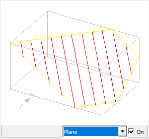
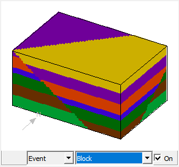
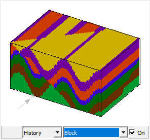
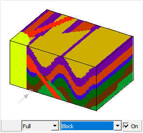
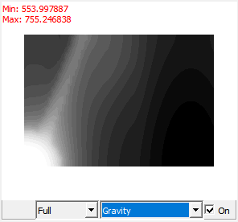
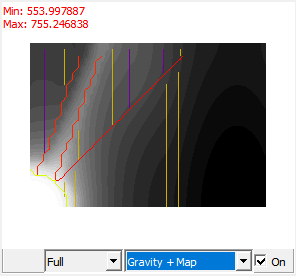
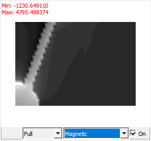

Event previews
In each structural definition window and some other options windows there is a preview window which helps you to choose the correct parameters for each deformation event. Two distinct preview menus are provided which in combination allow many different previews of the geological or geophysical results of changing specific parameters.
All types of previews update automatically whenever a parameter is altered in the event definition window, or you click in the preview window, and some examples of the various preview combinations are shown below.
Plane Previews show the current orientation and position of the planar and or linear features described for the particular event. Within the rectangular volume planar features are defined by a yellow outline, and linear features are defined by a set of parallel rulings within the plane. The arrow points to North. The preview is sensitive to orientation settings such as dip, dip direction and pitch, as well as positional information in X,Y,Z form, but for some events is not much use at all, except that at least it is quick.
If large or negative values are used for X,Y & Z the volume may be blank, as the plane is outside the field of view.

Block Previews
Block Preview provide a block diagram view of the effect of the current event on the geology. Three types of Block Preview can be selected the pull-down menu that appears to the left of the Preview Type menu in the preview window. The three choices are: Event, which simply shows the effect of this event on the Base Stratigraphy; History, which shows the cumulative effect of events up to and including the event currently being edited; and Full, which shows the effect of all the events defined in the History Window.
In the examples a
history was defined and we are currently editing the fault event. Thus Block/Event shows the effect of faulting only, Block/History shows the effect of the fold and the fault, and Block/Full shows the entire history.
The block diagram origin and scale are determined by the current Block View settings, and the resolution is 60% of the current Geology Block Size settings. This block diagram is not rotatable.
It is quite possible for the block diagram to be unaffected by the event, depending on the choice of parameters.



Block/Event Preview Block/History Preview Block/Full Preview
Gravity/Magnetics Previews
Gravity/Magnetics Previews show a preview of the geophysical fields resulting from the currently defined geology. As with Block Previews, three types of preview (Event, History & Full) may be selected the pull-down menu that appears to the left of the Preview Type menu in the preview window.
In addition a line map of the geology may be overlain on the geophysical image by selecting Gravity + Map or Magnetics + Map.
The calculation origin and scale are determined by the current Block View settings, and the resolution is 60% of the current Geophysics Block Size settings.
If very complex geology or fine cube sizes are chosen, previews will be grindingly slow, so it is often better to switch off the Preview, change alot of parameters, and then switch back to Block or other computationally intensive previews.


Gravity/Full Preview Magnetic+Map/History Preview
Difference Previews
Difference Previews show the arithmetic difference between the currently modelled gravity or magnetics and a previously defined reference dataset. As with other previews, three types of preview (Event, History & Full) may be selected the pull-down menu that appears to the left of the Preview Type menu in the preview window.
If no gravity or magnetics reference image has been loaded, this option will obviously not be able to function
In order to convert another image format to Noddy geophysics .mag or .grv formats, first dump the other image out in ASCII tab-delimited or space delimited format, then import using Import Image->ASCII from the Tools menu.

Noddy · open source under the MIT licence · Loop3D/noddy_qt